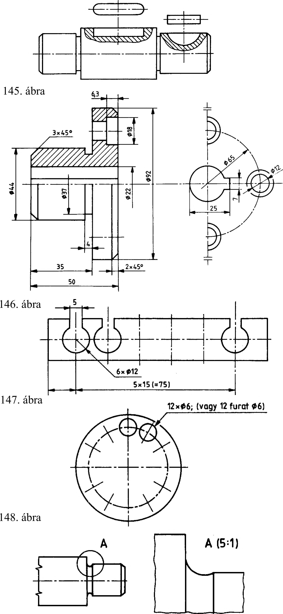

7. Ábrázolási különlegességek 7.4. Törésvonallal megszakított ábrázolás Hosszú tárgyakat, általában rúd alakú testeket (tengely, cső, hengeres rúd stb.), ha rajtuk hosszabb szakaszon semmilyen kialakítási részletet nem kell megmutatni, akkor az eddig tanultak szerint megrajzolni célszerűtlen. Ezeket a tárgyakat ábrázolhatjuk úgy, hogy a tárgy semmitmondó részeit elhagyjuk, és csak azokat a részeit rajzoljuk meg, amelyek a meghatározáshoz szükségesek. A tárgy kitört részeit elhagyva, a meghagyott részeket szorosan egymás mellett kell ábrázolni. Ezeket az ábrázolt tárgyrészeket vékony szabadkézi vagy egyenes törésvonallal határoljuk (142. ábra). 142. ábra ; •K 7.5. Szimmetrikus tárgyak részábrázolása (félvetület, negyedvetület) A tárgy vetületének (nézetének, metszetének) szimmetrikus ságát általában a szimmetriatengelyével jelöljük. A tengelyvonalakat vékony pontvonallal a vetület, ill. szimmetrikus részlet kontúrján túlhúzva kell megrajzolni. A szimmetrikus vetületnek (idő- és helymegtakarítás érdekében) szabad csak egy részét - a felét vagy a negyedét ábrázolni (143. ábra). Ilyenkor a szimmetriavonalat a két végén, rá merőleges irányú két-két rövid párhuzamos vékony vonallal kell jelölni (144. ábra). 7.6. Helyi nézetek Ha egy vetület valamelyik részlete miatt nem egyértelmű, akkor meg kell adni a kérdéses részlet helyi nézetét egy újabb teljes vetület ábrázolása helyett. A helyi nézet az amerikai vetítési mód szerint készül, függetlenül az adott vetítési módtól. A helyi nézeteket folytonos vastag vonallal kell rajzolni és a főnézethez középvonallal kell hozzákapcsolni (145. és 146. ábra). 7.7. Ismétlődő alakzatok egyszerűsített ábrázolása Az ismétlődő alakzatokat lehet egyszerűsítve ábrázolni úgy, hogy minden esetben meg kell adni az ismétlődő alakzatok számát és fajtáját mérettel vagy szöggel. Az ismétlődő alakzatot legalább egyszer - ha a méretmegadás miatt szükséges, többször is - részletesen meg kell rajzolni (147. és 148. ábra). 7.8. Nagyobb léptékű (kiemelt) részletek Ha a tárgy részleteit nem lehet a rajzon alkalmazott méretarányban ábrázolni vagy méretezni, akkor a kiemelt részt folytonos vékony vonallal körül kell határolni és nagybetűvel kell azonosítani. Ezt a körülhatárolt részletet az azonosító betű feltüntetésével az ábra közelében nagyobb léptékben ki kell rajzolni. A méretarányt zárójelbe tesszük (149. ábra). 143. ábra 144. ábra 149. ábra 40
